Grande Vitória, ES
Suspensão de moto com entrega hoje na Grande Vitória
139 peças: retentor, bengala, amortecedor e bucha. Entrega por motoboy no mesmo dia em Vitória, Vila Velha, Serra, Cariacica, Viana, para pedido até 12h. Pagamento no Pix. Troca grátis em 7 dias se não servir.
Escolha pela moto
CG 160CG 150CG 125BizPopBros 160Bros 150Fazer 150FactorCrosser 150XRE 300XRE 190Fazer 250Lander e Ténéré 250Twister e CB 300PCX 150
Suspensão de moto: peças em estoque
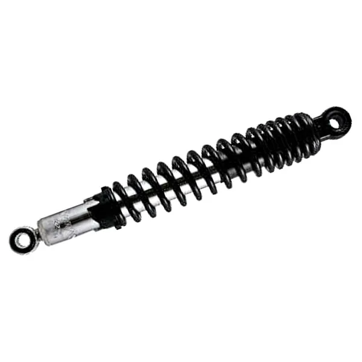

Retentor de bengala CG 160 Fan, CG 150 Titan e outras Corteco
Medida 31 x 43 x 10,3 mm
R$ 21,90no Pix

Retentor de bengala CG 160 Fan/Start, CG 150 Titan e outras Vedamotors
Medida 31 x 43 x 10,3 mm
R$ 21,90no Pix


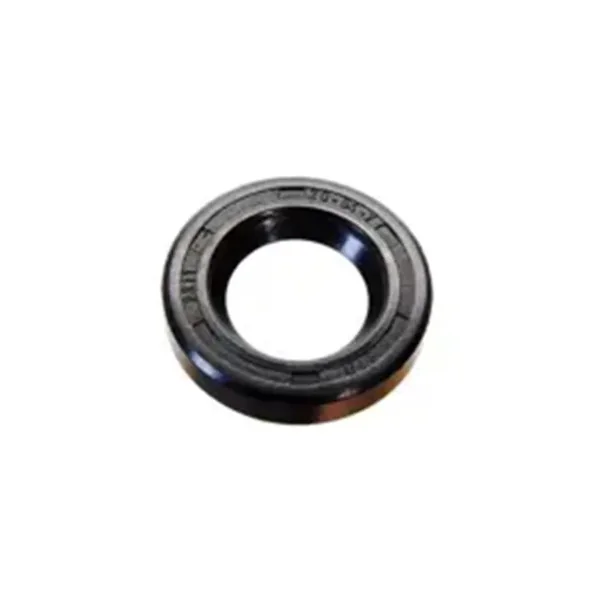
Retentor da haste da embreagem CG 160 Fan/Start, CG 150 Titan e outras Corteco
Medida 12 x 18 x 4 mm
R$ 12,90no Pix
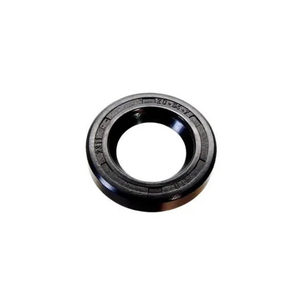
Retentor do pedal de câmbio CG 160 Start, CG 150 Titan e outras Corteco
Medida 14 x 22 x 5 mm
R$ 9,90no Pix

Retentor da haste da embreagem CG 160 Fan/Titan/Start, CG 150 Titan e outras Vedamotors
Medida 12 x 18 x 4 mm
R$ 9,90no Pix

Retentor do pedal de câmbio CG 160 Fan/Titan, CG 150 Titan e outras Vedamotors
Medida 14 x 22 x 5 mm
R$ 9,90no Pix
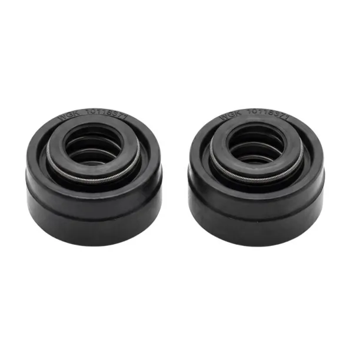

Retentor da roda dianteira CG 160 Fan, CG 150 Titan e outras Vedamotors
Medida 21 x 37 x 7 mm
R$ 9,90no Pix

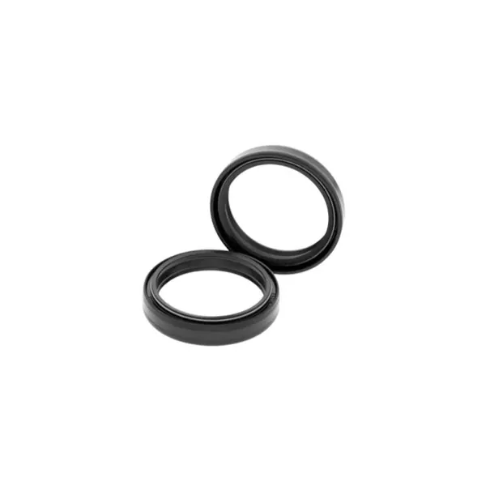


Bucha garfo traseiro CG 160 Fan/Titan/Start/Cargo Danidrea
R$ 45,90no Pix


Retentor do pedal de partida CG 150 Titan, CG 125 Titan e outras Corteco (cód. 510N)
Medida 16 x 28 x 7 mm
R$ 12,90no Pix


Retentor do pedal de partida CG 150 Fan/Titan, CG 125 Fan e outras Vedamotors
Medida 13,8 x 24 x 5 mm
R$ 9,90no Pix


Retentor do pedal de partida CG 150 Titan, CG 125 Titan e outras Corteco (cód. 117P)
Medida 16 x 28 x 7 mm
R$ 12,90no Pix

Retentor do pedal de câmbio CG 150 Fan/Titan, CG 125 Titan e outras Corteco
Medida 14 x 28 x 7 mm
R$ 11,90no Pix

Retentor da roda traseira CG 150 Fan/Titan/Start/Sport e CG 125 Fan Vedamotors
Medida 28 x 42 x 7 mm
R$ 9,90no Pix

Retentor do pedal de partida CG 150 Titan, CG 125 Fan/Titan e outras Vedamotors
Medida 16 x 28 x 7 mm
R$ 9,90no Pix
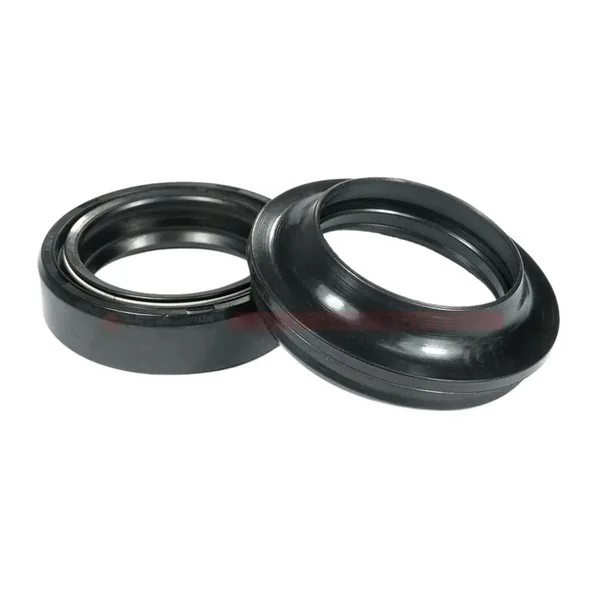


Retentor de bengala CG 125 Fan/Titan, Biz 125 e outras Corteco
Medida 27 x 39 x 10,5 mm
R$ 9,90no Pix
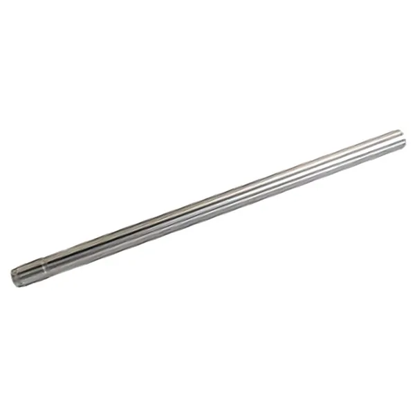


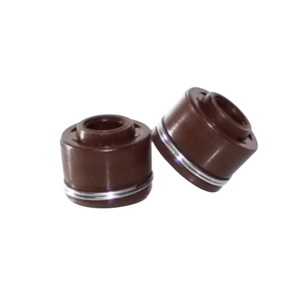

Retentor da haste da embreagem CG 125 Titan/Cargo, Bros 125 e outras Vedamotors
Medida 12 x 22 x 5 mm
R$ 9,90no Pix

Retentor de bengala CG 125 Fan/Titan, Biz 100 e outras Vedamotors
Medida 27 x 39 x 10,5 mm
R$ 18,90no Pix

Retentor de válvula CG 125 Titan, Bros 150 e outras WGK
R$ 9,90no Pix


Retentor do pedal de câmbio CG 125 Fan/Titan, XRE 300 e outras Vedamotors
Medida 14 x 28 x 7 mm
R$ 9,90no Pix


Bucha deslizante bengala CG 125 Titan 1994 a 2004 Mide Parts
R$ 15,90no Pix
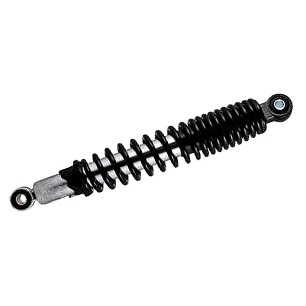


Tubo interno da bengala Biz 125 Cofap
R$ 70,90no Pix

Tubo interno da bengala Biz 125 2011 a 2017 Cofap
R$ 75,90no Pix


Retentor do pedal de câmbio Biz 125, Biz 100 e outras Vedamotors
Medida 116 x 24 x 10 mm
R$ 9,90no Pix


Caixa de direção Biz 125, Biz 100 e outras Danidrea
R$ 33,90no Pix
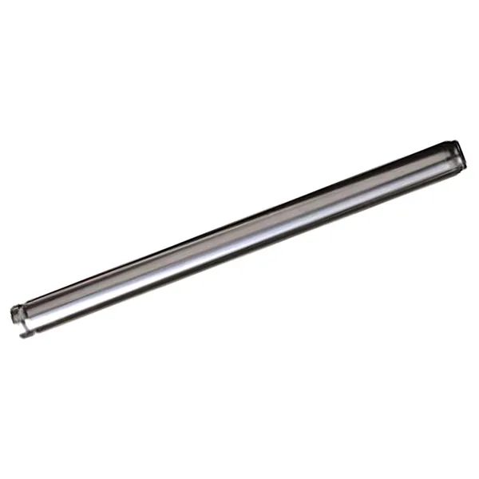
Tubo interno da bengala Biz 100, Pop 110i e outras Cofap
R$ 66,90no Pix


Retentor do pedal de partida Biz 100, C 100 Dream e outras Corteco
Medida 13,8 x 24 x 5 mm
R$ 13,90no Pix
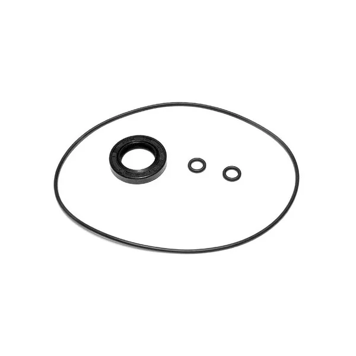
Retentor do magneto Biz 100 e Pop 100 Vedamotors
R$ 11,90no Pix
Não achou a peça?
Mande o modelo e o ano da moto no WhatsApp (27) 92000-6463. A gente confere na distribuidora e responde com o preço.